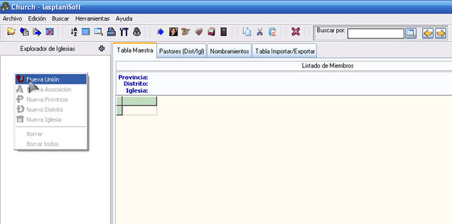
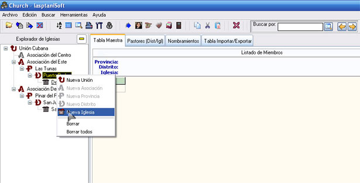
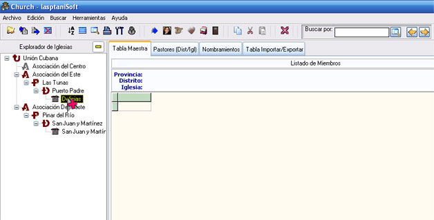
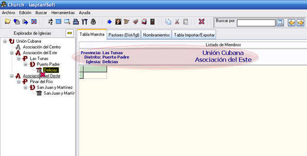

El Explorador de Iglesias
Es aquí precisamente donde comienza su trabajo con Church.
El explorador de Iglesias es igual al explorador de windows, solo que en vez de carpetas y subcarpetas allá, aquí son datos de las iglesias, es decir, aunque le llamamos explorador de Iglesias, no solamente contiene Iglesias, sino también: uniones, asociaciones, provincias y distritos en ese mismo orden, siendo la iglesia lo último en añadir.
Cuando desliza el mouse sobre el explorador de Iglesias, oprima el botón secundario del ratón y aparecerá el menú contextual (Figura 2) que le brinda la oportunidad de comenzar a introducir los primeros datos.

Figura 2. El Explorador de Iglesias.
Le sugerimos colocar el mouse sobre el elemento del cual dependerá el que está añadiendo, de lo contrario algunas opciones aparecerán desactivadas, es decir, los elementos en el explorador son padres e hijos, excepto Unión que no tiene padre e Iglesia que no tiene hijos al no ser los miembros de esa iglesia.
Ejemplo: para añadir una iglesia, se coloca el puntero del mouse sobre el distrito al cual se está añadiendo dicha iglesia, como se muestra en la figura 3.

Figura 3. Añadiendo nueva iglesia sobre el distrito Puerto Padre.
Como ve solo puede hacer uso de los elementos activos. Puede añadir una nueva unión y una nueva iglesia, además de borrar el elemento activo o todos, para lo cual le pedimos diligencia, es decir, a la hora de borrar debe tener presente que cuando borra un elemento, se borran todos los elementos que dependen de él, y que dicho borrado no tiene marcha atrás, debido a que es una base de datos relacional, donde un registro tiene varias dependencias.
Ejemplo: si borra en la figura 3 la Asociación del Este, se borrará también la provincia Las Tunas y el distrito Puerto Padre con todas sus iglesias y miembros.
De cualquier manera ningún borrado se realizará sin una debida confirmación.
A la derecha del título del panel Explorador de Iglesias aparece un botón que toma dos formas:
Expandir todo el árbol del explorador.
Contraer todo el árbol del explorador.
Cuando añada iglesias al explorador, éstas no se activan por defecto, solo se activarán cuando haga doble clic sobre ellas o cuando al estar seleccionadas oprima la tecla Enter (Return), en este caso el icono de la iglesia activada cambiará por uno similar, pero que evidencia que esa iglesia está abierta.
Nota: Cuando realice búsquedas Globales o por selección, el icono que identifica la iglesia activa desaparece por causa de que la búsqueda no se realizó en la iglesia activa.

Figura 4. Iglesia seleccionada, pero no activada.

Figura 5. Iglesia seleccionada y activada.
Al comparar la figura 4 con la figura 5 puede notar la diferencia, entre lo que es una iglesia seleccionada y una Iglesia activada con doble clic o Enter. El icono cambió y además se han añadidos todas las dependencias en el panel informativo que está encima de la tabla (marcado en rojizo e la figura 5).